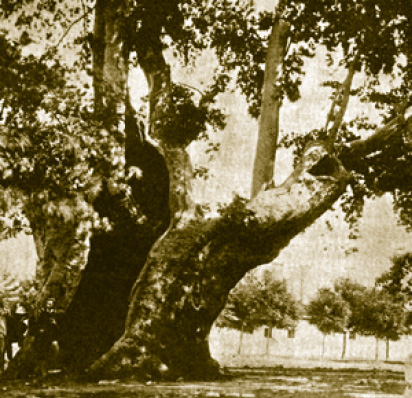

ÖN SÖZ
Osmanlı padişahlarının ikametgâhı ve aynı zamanda devletin yüksek ofislerinin bulunduğu Topkapı Sarayı’nı gezerken ön hazırlık yapmamız, gerek Osmanlı tarihini gerekse saray hayatını öğrenmek bakımından fevkalade ehemmiyet kesbetmektedir.
“Mekânlar ve Olaylarıyla Topkapı Sarayı” isimli kitabımızın ilk baskısı tükendi. O eserdeki metinleri; her baskıda olabilen bazı kaçınılmaz yanlışları düzelmek, okunmasını kolaylaştırmak ve pahalı olmayan bir şekilde baskıya giderek daha geniş bir kitleye ulaştırmak için ikinci defa okuyucuya sunuyoruz. Bu baskıda bazı ilaveler yaptık ve metni sarayın eski ve bilinmeyen fotoğraflarıyla zenginleştirmeye çalıştık.
Bu çalışmada aziz meslektaşım benden evvelki saray müdürü Dr. Filiz Çağman’ın, Türk dili ve edebiyatının en önemli uzmanlarından Prof. Dr. Günay Kut’un ve müzemiz küratörlerinden Dr. Deniz Esemenli’nin metni gözden geçirmek ve bazı hatalara işaret etmekteki çalışmalarını, yayın editörü Salih Gülen’in tarihî fotoğraf desteğini unutamam, bu katkılara müteşekkirim.
Ümit ederim ki Topkapı Sarayı’ndaki hayatı, sarayı tarih gözünde canlandırmayı ve okuyucuya öyle vermeyi amaçlayan bu baskı hedefine ulaşır. Kaynak Yayın Grubu’na ve Yitik Hazine Yayınları’na bu baskı için ayrıca teşekkür ederim.
İlber Ortaylı
Topkapı Sarayı Müzesi
Nisan 2008

Yeniçeri Çınarı’nın 1898’de çekilmiş bir fotoğrafı.